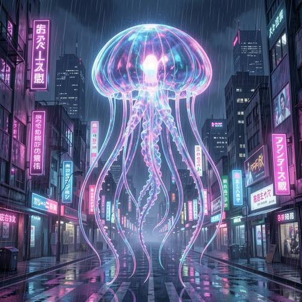
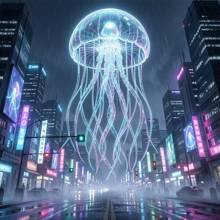

Style — A huge crystal jellyfish floats in the neon rainy night of a future Cy
A huge crystal jellyfish floats in the neon rainy night of a future Cyberpunk city, its tentacles are shimmering, and the picture is in a digital art style.

Direct — one call, no iterationContinuum — Kimi K3 + FLUX.2-klein-9B
Judge — Direct
PASSStyle — The image has a polished look with clean lines, vibrant colors, and detailed rendering of light and reflections on the wet street, which are all characteristic features of the digital art style.
PASSCompound - Imagination — The image features a huge jellyfish, which is out of proportion with the surrounding city buildings, floating in the air above a street. A jellyfish floating in a city is an impossible, imaginative scenario.
PASSAction - Animal — The tentacles of the jellyfish are depicted as glowing with a luminous quality, emitting a vibrant pink, purple, and blue light. This glowing effect can be described as shimmering.
FAILAttribute - Material — The jellyfish in the image is translucent and glowing, but its surface appears smooth, curved, and gelatinous. It does not exhibit the hard, faceted, or geometric structure typically associated with crystal.
Judge — Continuum
PASSStyle — The image exhibits a polished and refined look with clean lines, smooth gradients, and vibrant, glowing light effects on the neon signs and the jellyfish. The reflections on the wet street are rendered with high fidelity. These characteristics are all hallmarks of a digital art style.
PASSCompound - Imagination — The image shows a giant jellyfish, which is a sea creature, floating in the air above a city street lined with skyscrapers. The scale of the jellyfish is immense, towering over the buildings. This scene is impossible in the real world and is a product of imagination.
PASSAction - Animal — The long tentacles of the jellyfish are depicted as luminous, glowing with a soft blue and purple light. This glow gives them a shimmering quality as they hang in the rainy night air.
PASSAttribute - Material — The jellyfish's body, particularly its bell, is rendered as a translucent material. It has geometric, almost faceted patterns on its surface, and it refracts the light from within, consistent with the appearance of crystal.
What the agent did
Thinking
We need need generate image according policy always flux2-klein. Need perhaps one generation then inspect. User simple prompt. We need use commentary tool. Let's generate 1024. Prompt vivid.
Step 1 — `generate_image`
{
"model": "flux2-klein",
"prompt": "A colossal translucent crystal jellyfish floating high above a futuristic cyberpunk city at night, thousands of shimmering ribbon-like tentacles cascading downward through neon-lit rain. Dense skyscrapers below with glowing holographic signs, wet reflective streets, airborne traffic lights, deep blues, cyan, violet, and magenta illumination. Intricate crystalline refractive surfaces, bioluminescent edges, volumetric fog, dramatic low-angle cinematic composition, highly detailed polished digital art, wide 16:9 composition",
"width": 1024,
"height": 576
}
Result img_0

Thinking
Image actually square? Tool output visual square maybe weird despite requested 576. It is excellent. Need inspect? Prompt no text specifically, no need. Huge crystal jellyfish, rainy future city, shimmering tentacles, digital style. Everything. Need mark best, perhaps image looks good. Need maybe mark.
Step 2 — `mark_best`
{
"image": "img_0",
"reason": "The image clearly depicts a massive translucent crystalline jellyfish with glowing, shimmering tentacles floating over a neon-soaked, rainy cyberpunk city in a polished digital-art style."
}
Model
Created the cyberpunk crystal jellyfish scene with neon rain, reflective city streets, and shimmering tentacles.